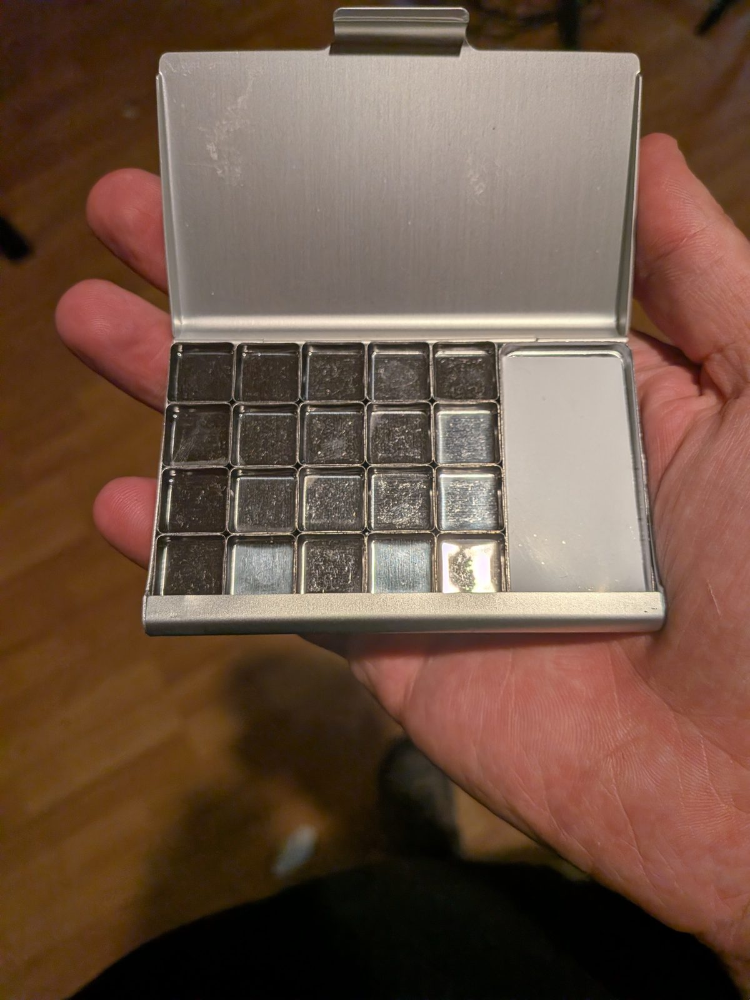
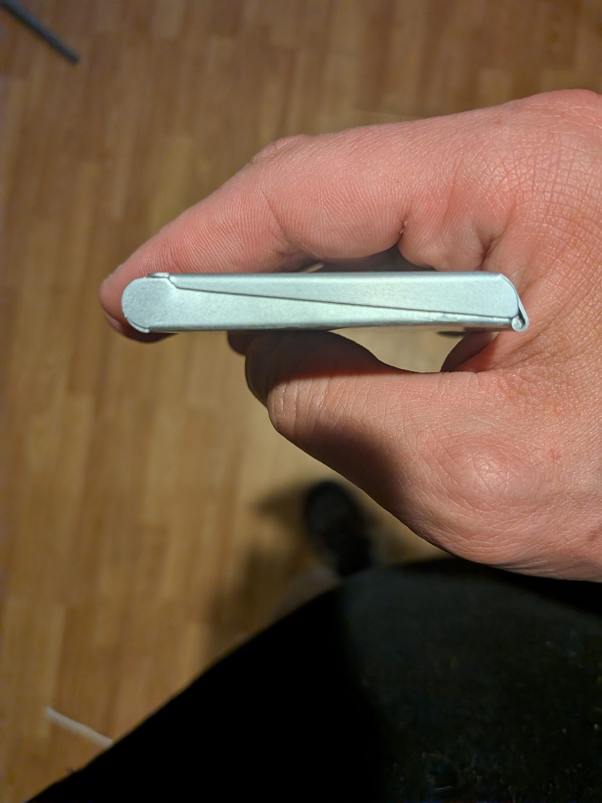
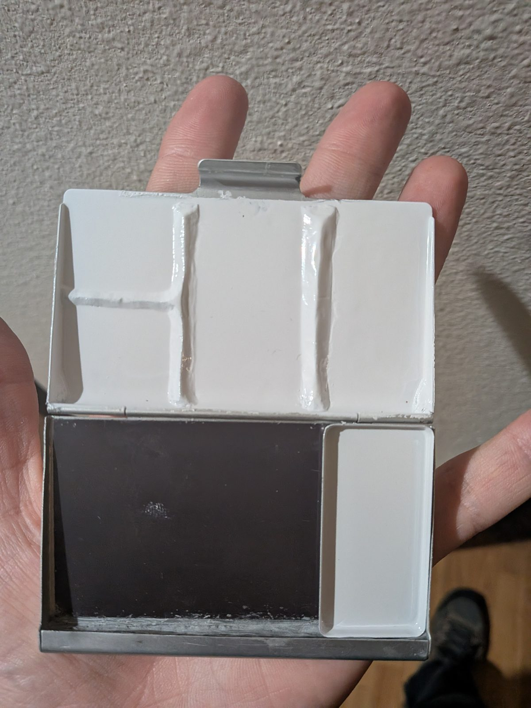
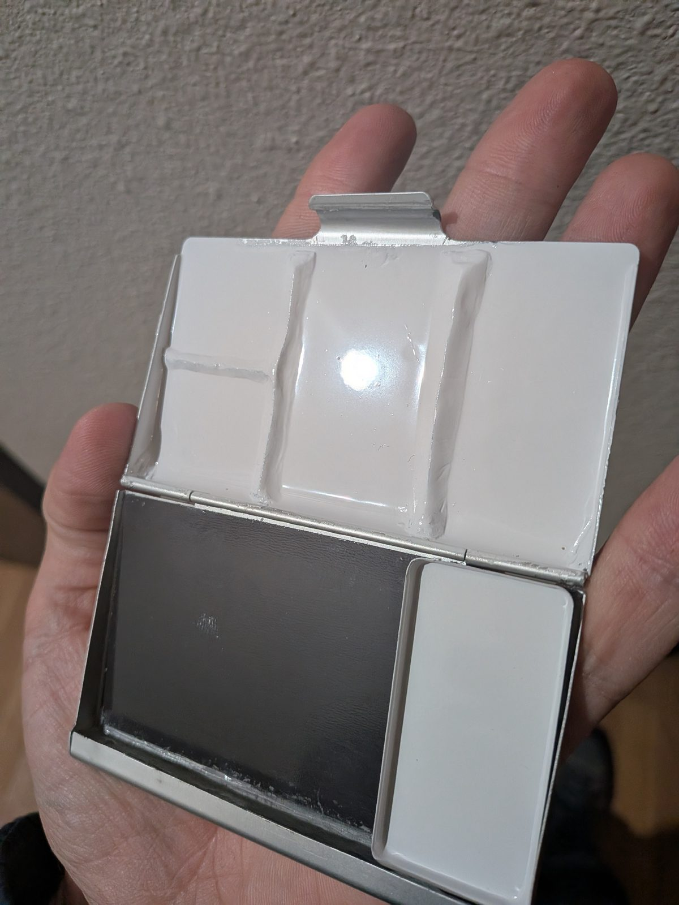
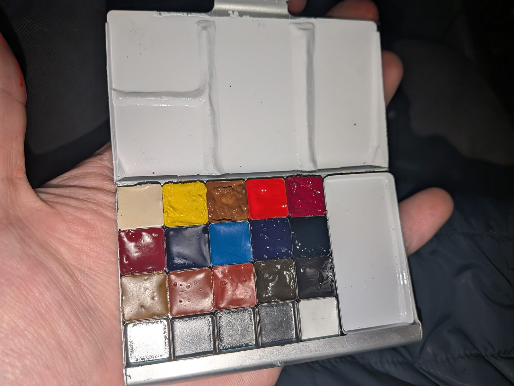
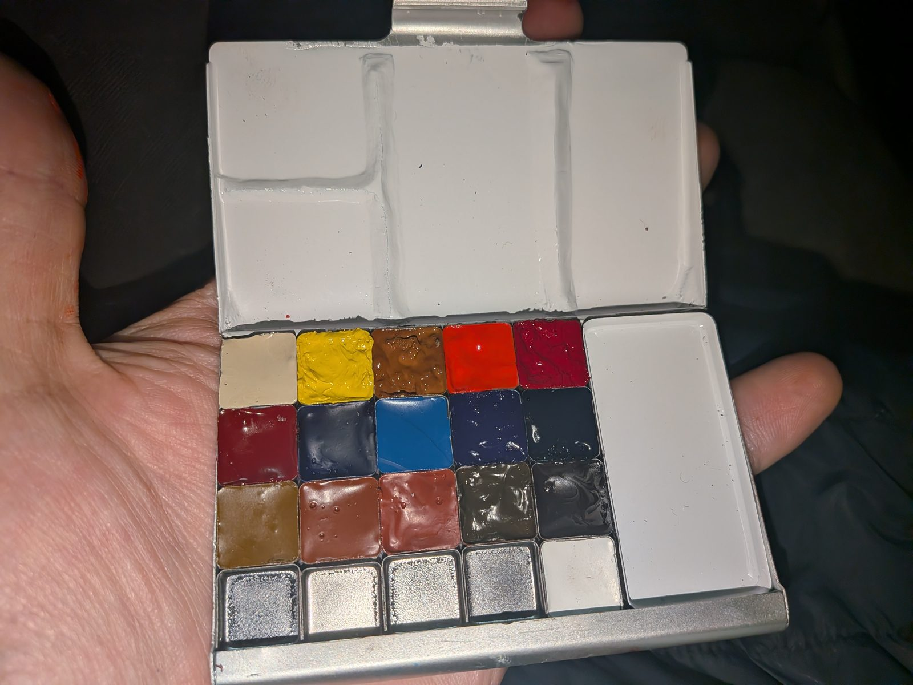

DIY travel watercolor palette
A pocket watercolor palette for my Traveler's Notebook, made for cheap instead of buying the Art Toolkit.
Why I made it
I wanted to get into travel watercolor with my Traveler's Notebook. I loved the Art Toolkit palette, but I was just starting watercolor and didn't want to spend that kind of money yet. So I built my own for very cheap.
Brand new
The base is a cheap makeup clamshell from China that came with magnetic metal pans.




The mods
- Mixing wells: I built dividing walls on the lid out of two-part epoxy. They make wells that hold some water for washes, without giving up space in the grid for paint. Each wall has a triangular edge to scrape the brush on.
- Finish: I sprayed the lid with white appliance epoxy, and clear-coated the inside of the paint wells.




Filled



